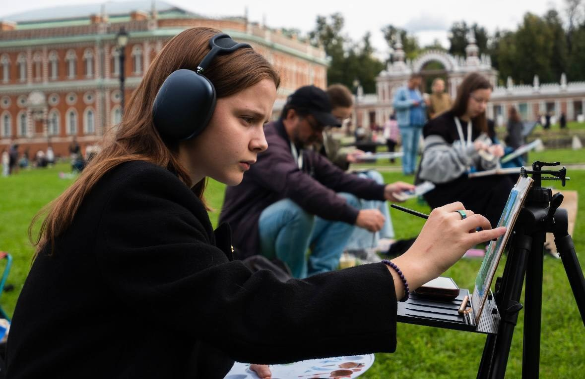

Искусство
замечать.
Почему художнику важно рисовать повседневность и находить вдохновение в самых обычных вещах.
Мир вокруг
нас — уже искусство.
Художник отличается от других людей не только умением рисовать. Он умеет замечать то, мимо чего остальные проходят каждый день.
Необычное сочетание цветов, случайная тень на стене, отражение в окне, силуэт прохожего или свет, который на несколько минут изменил привычное пространство. Всё это может стать началом творческой идеи.
Мы решили поговорить о наблюдательности — навыке, который помогает художнику находить сюжеты не только в музеях и мастерских, но и в обычной повседневной жизни.


Смотреть — ещё не значит видеть.
Первый шаг к рисунку начинается задолго до того, как карандаш коснётся бумаги.
Мы постоянно окружены визуальной информацией, но редко останавливаемся, чтобы действительно её рассмотреть. Привычные пространства становятся фоном: коридоры, лестницы, остановки, окна и городские улицы.
Попробуйте посмотреть на знакомое место так, будто видите его впервые. Как падает свет? Какие формы повторяются? Где появляется контраст? Как расположены предметы относительно друг друга?
Один и тот же пейзаж может выглядеть совершенно по-разному в зависимости от света, времени и точки зрения.
Скетчбук как пространство наблюдений.
Не альбом идеальных рисунков, а личная коллекция впечатлений.
Скетчбук — это не обязательно место для законченных работ. Скорее, это пространство для экспериментов, быстрых зарисовок и поиска визуальных решений.
В нём могут соседствовать случайные надписи, цветовые сочетания, силуэты, фрагменты архитектуры, схемы и небольшие композиционные эксперименты. Не нужно стремиться к идеальному результату: иногда ценнее всего оказывается сам процесс наблюдения.
Насмотренность складывается из множества маленьких наблюдений и впечатлений.
Учиться замечать можно каждый день.
Несколько простых упражнений, которые помогут внимательнее смотреть на привычные вещи.
Один предмет — несколько ракурсов
Выберите любой предмет рядом с собой. Сделайте несколько быстрых зарисовок, меняя положение листа и точку обзора. Обратите внимание, как меняются пропорции и силуэт.
Пять минут на свет и тень
Найдите предмет с интересным освещением. Не прорисовывайте детали — попробуйте передать только основные светлые и тёмные пятна, их форму и расположение.
Коллекция цветовых сочетаний
Записывайте необычные сочетания цветов, которые встречаете в городе, природе или интерьере. Позже они могут стать основой палитры для иллюстрации, плаката или другой творческой работы.
Зарисовка без ожиданий
Выделите несколько минут на быстрый рисунок. Не исправляйте линии и не оценивайте результат. Ваша задача — зафиксировать впечатление, пока оно не исчезло.
Вдохновение ближе, чем кажется.
Для новой идеи не всегда нужны особенные обстоятельства.
Иногда достаточно выйти на улицу, посмотреть на привычное пространство под другим углом или задержать взгляд на детали, которую раньше не замечали.
Повседневность не ограничивает художника — она даёт ему бесконечное количество материала. Важно только позволить себе остановиться, присмотреться и сохранить увиденное.
Продолжайте
замечать.
Искусство начинается с внимания к миру вокруг. А «Этюд» продолжает собирать истории, идеи и впечатления нашего творческого сообщества.
Один голос на устройство — но мнение каждого важно.